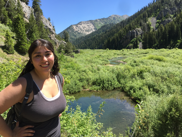

Thank you for taking the time to look through my page.
My aim is to bring passion, motivation, and intellect to a team of like-minded individuals by investing in the success of my team and continued dedication to my own personal and professional growth. With my experience and work ethic, I aim to become an established and vital contributor to my team and organization.
Technical Skills
- Proficient in C/C++, Python, Java and experience with Matlab, HTML, CSS
- Vehicle-to-Vehicle Messaging
- Vehicular Ad-Hoc Networks
- Software Define Networks
- Neural Networks
- Distributed Computing
- Technical Writing
- Languages (Spanish-Fluent in Speaking and Writing)
About Me
I graduated from Duke University with a Master’s degree in Computer Science. As a student, I conducted research in the areas of networking, autonomous vehicles, and Vehicle-to-Vehicle technology. I have also consistently served as a student tutor or teaching assistant in technical courses. This experience allowed me to quickly identify areas where students struggle most and effectively break down complex concepts and communicate them clearly. Post-graduation, I have ventured on to teach courses at Duke University at the undergraduate level. I have also had the chance to work closely with other professors and study their teaching philosophies and how they conduct their courses. This experience has lead to a vast growth in my own teaching philosophy and a more comprehensive view of academia.